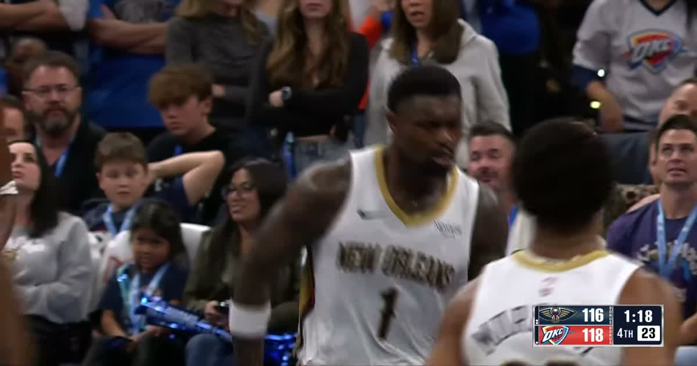

TSL Bets: Zion Williamson OVER 21.5 points at San Antonio (+125)
The Pelicans are shorthanded, on a back-to-back, and 16.5-point underdogs — and Zion Williamson has still cleared 21.5 points in 8 of his last 10 games. The play: Zion OVER 21.5 points (+125, Fanatics) at San Antonio.

The game slip
New Orleans Pelicans (5-12) at San Antonio Spurs (13-3)
Saturday, 8:00 PM ET — Frost Bank Center, San Antonio (DAZN)
• Spread: Spurs -16.5
• Total: 227.5
• Moneyline: Pelicans +810 / Spurs -1351
• Odds source: FanDuel, November 21
Injury report — Pelicans: G Dejounte Murray OUT (left ankle sprain). G Bennedict Mathurin OUT (left plantar fasciitis). F Trendon Watford OUT (right ankle sprain). G Bryce McGowens OUT (left elbow infection). F Trey Murphy III questionable (knee) — he returned Friday at Oklahoma City after six games out, scoring 17 points in 28 minutes.
Injury report — Spurs: G Dylan Harper OUT (left hip strain — 18.4 points a game). F Tobias Harris OUT (left calf strain — has not played this season). F Jayden Quaintance OUT (right knee surgery recovery — has not played this season).
Storylines: The Spurs are 13-3 and second in the West with a +11.3 net rating, winners of nine of their last ten. They beat the Clippers 124-112 on Thursday without Harper, with Victor Wembanyama going for 32 points and 11 rebounds and Stephon Castle adding 21 points and 12 assists. New Orleans is 5-12, has lost eight of its last nine, and is on the second night of a back-to-back after blowing a 16-point third-quarter lead in a 126-120 loss at Oklahoma City on Friday, where Shai Gilgeous-Alexander went for 40. The Pelicans are also 0-3 in the NBA Cup. The head-to-head is the fun one: when these teams met in October, Wembanyama had 29 points, 11 rebounds and nine blocks — and Williamson still went for 27 points, 10 rebounds and 7 assists.
The bet
Zion Williamson OVER 21.5 points (+125, Fanatics)
Why this prop
Williamson has cleared 21.5 points in 8 of his last 10 games — 22, 24, 16, 24, 22, 29, 25, 13, 23, 25, newest first — and he just did it again on Friday, scoring 22 points with 6 rebounds and 7 assists in 37 minutes at Oklahoma City. He is averaging 21.7 points a game this season, and the usage picture is all his: Murray, Mathurin and Watford are out, Murphy is questionable, and Jeremiah Fears and Jordan Poole are the rest of the guard rotation. With the Pelicans shorthanded, the ball finds Williamson — he played 37 minutes on Friday, the most of any Pelican starter. And the matchup has already produced once this season: 27 points against Wembanyama in October.
This is the props-first single by the book: a player prop with a real trend edge, plus money, and a line sitting right at the player's season average.
The honest caveats
The Spurs are laying 16.5, and a blowout could trim Williamson's fourth-quarter minutes — the same risk that shadows every favorite-side prop. Wembanyama is also the worst possible matchup for a paint scorer: 3.9 blocks a game, and nine of them came in that October meeting. The models are not unanimous either: one projection puts the over at 41%, below the 44.4% the +125 price implies, so the case is the recent trend and the usage, not a model consensus. And the Pelicans are on the second night of a back-to-back after a Friday night in Oklahoma City. The edge is real, but it is an edge, not a lock.
The record
TSL Bets is 21-36 in November, 25-57 all-time. Props are the only winning singles category — that's why the daily single is a prop.
If you or someone you know has a gambling problem, call 1-800-GAMBLER.
Sources
• Best NBA Player Props Today, November 21, 2026 (WagerLens)
• NBA Predictions, Odds and Betting Lines - November 21 (FanDuel Research)
• Zion Williamson Projections, Player Props and Stats (Covers)
• Zion Williamson props: game log, hit rates, history vs SAS (Oddsloft)
• Game Preview: San Antonio Spurs vs New Orleans Pelicans (Pounding The Rock)